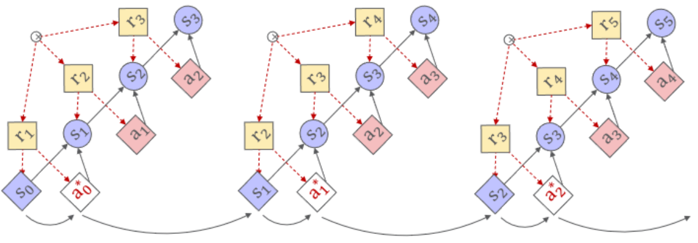
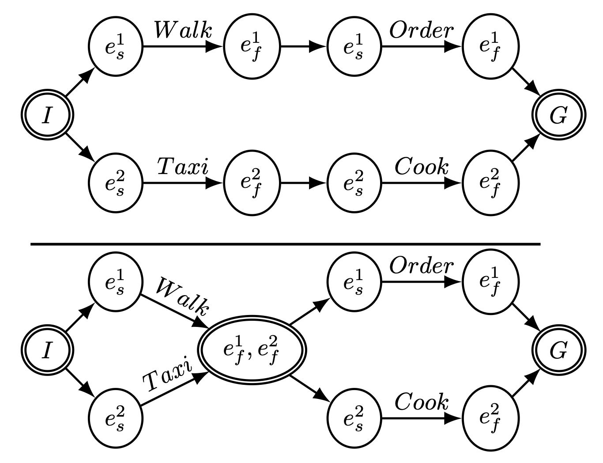
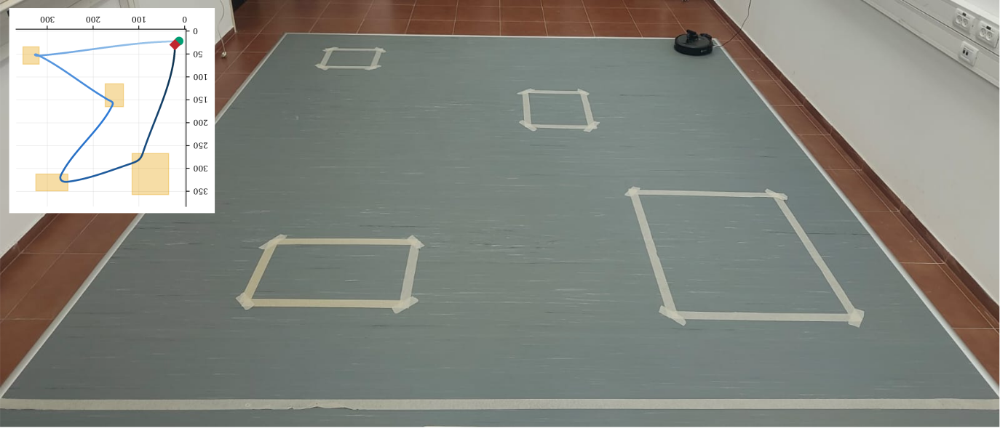
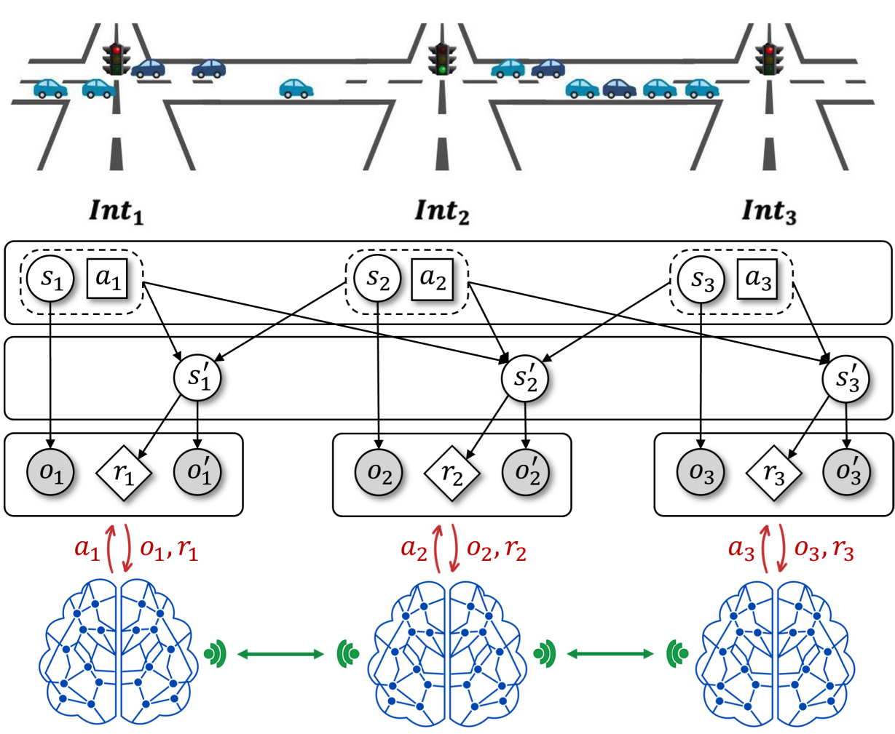
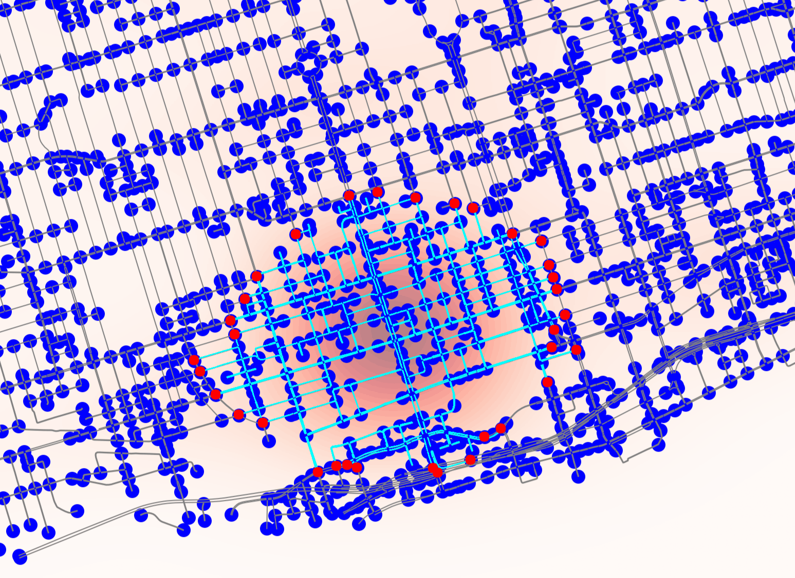

My research focuses on intelligent decision-making in complex, dynamic systems. I develop methods that combine structured models, optimization, search, and learning, with applications in robotics, autonomous systems, and intelligent transportation.
Developing computational approaches for sequential decision-making using explicit models, mathematical optimization, search, and learning.
Stochastic Planning and Reinforcement Learning

Model-based planning and MDP formulation
I study how analytical models of stochastic environments can support efficient optimization of policies and plans. This research combines mathematical programming, model-based reinforcement learning, and gradient-based planning, including methods for continuous and mixed discrete–continuous decision spaces. This research is supported by tools such as pyRDDLGym for RDDL-based modeling and experimentation.
An open-source Python framework for modeling, simulating, and evaluating planning and reinforcement learning algorithms in stochastic environments described using the Relational Dynamic Influence Diagram Language (RDDL).
Automated Planning and Scheduling

Diverse temporal plans and flexible plan structure
This line of work addresses structured planning and scheduling problems using search and learning. It includes SOLO, which formulates scheduling as a Markov decision process and combines reinforcement learning with Monte Carlo Tree Search, as well as research on generating diverse temporal plans to improve plan flexibility.
Selected work
SOLO ↗Scheduling via MDPs, reinforcement learning, and MCTS
Integrating symbolic decision-making with continuous motion planning and physical dynamics to produce executable behavior for autonomous systems.
Integrated Task, Motion, and Optimal Control

Integrated robotic task and motion planning
My robotics research connects high-level task planning with trajectory optimization and optimal control. It addresses mixed discrete–continuous decisions, timing and physical constraints, nonlinear dynamics, and disturbances. More recent work explores learning-guided refinement of plans to improve physical feasibility.
Applying reinforcement learning and optimization to coordinated traffic control, congestion management, and intelligent mobility systems.
Multi-Agent Traffic Signal Control

Multi-agent traffic signal coordination
This work develops learning-based approaches for coordinating traffic signals across road networks. It studies distributed multi-agent control, information sharing across network topology, and decision-making under partial observability.
Selected work
eMARLIN ↗Topology-aware distributed traffic signal control
eMARLIN+ ↗Coordination under partial observability
Network-Level Traffic Management

Identifying traffic-control perimeters in an urban road network
This research addresses network-wide traffic management and congestion control, including reinforcement-learning approaches to perimeter control and the identification of useful control regions. Related ongoing work investigates learning-based variable speed limit control.